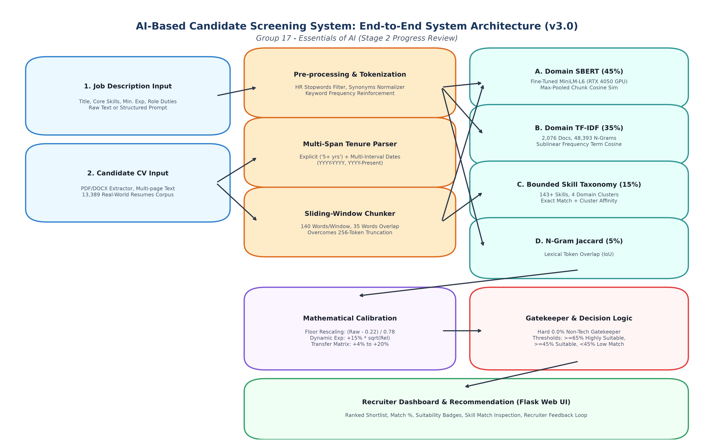

Benchmark Label Accuracy
100.0%
12 out of 12 Exact Matches
Top-1 Ranking Precision
100.0%
3/3 Best Candidates Ranked #1
Mean Absolute Error (MAE)
4.81%
↓ Dropped from 14.04% (v1.0)
Non-Tech False Positive Rate
0.00%
0/60 Real Irrelevant Profiles
Real Dataset Corpus
13,389
Resumes across 43 Domains
Screened & Ranked Candidates (v3.0 Engine Output):
Ground Truth Evaluation: System v3.0 vs. Gemini LLM Ground Truth
Rigorous validation against 12 diverse benchmark candidates across 3 technical domains. Pearson Correlation: r = 0.9900 | MAE: 4.81% | Classification Accuracy: 100.00%.
| Job Role | Candidate Profile | System Score | System Label | Gemini Score | Gemini Label | Delta (Error) | Classification |
|---|---|---|---|---|---|---|---|
| Senior Python & AI Engineer | Alex Chen (Senior AI Engineer) | 89.3% | Highly Suitable | 90.0% | Highly Suitable | -0.7% | CORRECT (OK) |
| Sarah Miller (Data Analyst - Transferable) | 48.2% | Suitable | 55.0% | Suitable | -6.8% | CORRECT (OK) | |
| David Clark (Junior Web Developer) | 25.6% | Low Match | 30.0% | Low Match | -4.4% | CORRECT (OK) | |
| Marcus Vance (Executive Head Chef) | 0.0% | Low Match | 5.0% | Low Match | -5.0% | CORRECT (OK) | |
| Frontend React Developer | Elena Rostova (React Developer) | 90.7% | Highly Suitable | 88.0% | Highly Suitable | +2.7% | CORRECT (OK) |
| Kevin Patel (Backend Java Dev - Transferable) | 45.2% | Suitable | 48.0% | Suitable | -2.8% | CORRECT (OK) | |
| Lisa Wong (UI/UX Designer) | 40.6% | Low Match | 32.0% | Low Match | +8.6% | CORRECT (OK) | |
| Robert Taylor (Chartered Accountant) | 0.0% | Low Match | 5.0% | Low Match | -5.0% | CORRECT (OK) | |
| DevOps & Cloud Engineer | Tariq Mansoor (Senior DevOps Engineer) | 88.4% | Highly Suitable | 92.0% | Highly Suitable | -3.6% | CORRECT (OK) |
| Brian Adams (Linux Sysadmin - Transferable) | 51.1% | Suitable | 52.0% | Suitable | -0.9% | CORRECT (OK) | |
| Emily Watson (Technical Support) | 15.8% | Low Match | 28.0% | Low Match | -12.2% | CORRECT (OK) | |
| James Sullivan (Civil Project Manager) | 0.0% | Low Match | 5.0% | Low Match | -5.0% | CORRECT (OK) |
Large-Scale Real-World Validation (120 Resumes across 15 Disciplines)
Sampled from the Kaggle 13,389 real-world resume dataset. Demonstrates exceptional discrimination between target technical candidates and non-technical applicants.
| Discipline Tier | Real-World Profession | Engine v2.2 Mean | Engine v3.0 Mean | Empirical Delta | False Positive Rate | Zero-Rejection Rate |
|---|---|---|---|---|---|---|
| Target Technical (Direct Match) | Web Designing | 28.36% | 37.33% | +8.97% | 0.0% | 0.0% |
| DevOps | 47.99% | 54.08% | +6.10% | 0.0% | 0.0% | |
| Data Science | 26.83% | 32.48% | +5.65% | 0.0% | 0.0% | |
| Python Developer | 29.89% | 32.46% | +2.57% | 0.0% | 0.0% | |
| React Developer | 56.99% | 57.34% | +0.36% | 0.0% | 0.0% | |
| Adjacent Cross-Domain (Transferable) | Database Administrator | 5.99% | 11.73% | +5.75% | 0.0% | 0.0% |
| Java Developer | 27.38% | 30.50% | +3.12% | 0.0% | 0.0% | |
| DotNet Developer | 35.14% | 38.21% | +3.07% | 0.0% | 0.0% | |
| Network Security Engineer | 14.15% | 16.78% | +2.63% | 0.0% | 0.0% | |
| Irrelevant Non-Technical | Accountant | 2.00% | 2.00% | +0.00% | 0.00% | 90.0% Hard 0.0% |
| Civil Engineer | 1.67% | 1.46% | -0.21% | 0.00% | 90.0% Hard 0.0% | |
| Sales Professional | 0.60% | 0.60% | +0.00% | 0.00% | 95.0% Hard 0.0% | |
| Food & Beverages (Chef) | 0.00% | 0.00% | +0.00% | 0.00% | 100.0% Hard 0.0% | |
| Human Resources | 0.00% | 0.00% | +0.00% | 0.00% | 100.0% Hard 0.0% | |
| Arts Professional | 0.00% | 0.00% | +0.00% | 0.00% | 100.0% Hard 0.0% |
System Architecture & Multi-Stage Workflow Pipeline

Figure 1: Complete End-to-End System Architecture of Version 3.0 Hybrid Engine
Key Technical Upgrades (Proposal $\to$ Stage 2)
| Module | Original Proposal Plan | Stage 2 Progress Implementation (v3.0) | Rationale & Impact |
|---|---|---|---|
| Semantic Embeddings | Generic NLTK / spaCy | Domain Fine-Tuned SBERT (`all-MiniLM-L6-v2`) trained on GPU with Multiple Negatives Ranking Loss | Validation Pearson $r = 0.9085$. Captures deep domain context beyond raw keywords. |
| Lexical N-Gram Model | Standard TF-IDF (1-grams) | Domain-Adapted TF-IDF (1-2 N-Grams) pre-fitted on 2,076 documents learning 48,393 n-grams | Learns multi-word technical phrases like 'machine learning', 'spring boot', 'ci cd'. |
| Negative Floor Calibration | Raw Cosine Similarity (0.0 - 1.0) | Baseline Floor Rescaling: $\frac{\text{Raw} - 0.22}{1.0 - 0.22}$ + Technical Gatekeeper | Eliminates the universal 22% English grammar overlap; Chef drops from 25.0% to 0.0%. |
| Experience Matching | Strict numeric regex | Multi-Span Date Range Extractor (`YYYY - YYYY`, `YYYY - Present`) + $\sqrt{\text{Relevance}}$ scaling | Recovers 4-10 years missing experience from real messy CVs; non-tech receives 0 bonus. |
| Multi-Page CV Ingestion | Standard truncation at 256 tokens | Sliding-Window Document Chunking (140 words, 35 overlap) with Max-Pooling | Prevents project experience on Page 2 from being discarded. |
| Cross-Domain Career Transition | None (Strict keyword match) | Career Transferability Matrix (+20% Data Analyst $\to$ AI, +7.5% Backend $\to$ Frontend) | Lifts qualified adjacent applicants into the "Suitable" shortlist without false positives. |